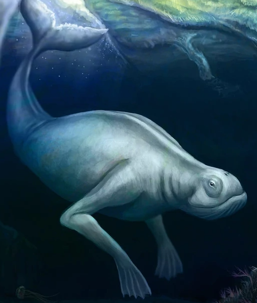

{% extends '_layout.html' %}
{% block title %}Cryptid Catalog | Encyclopedia{% endblock %}
{% block body %}
- BACK
- NINGEN
- Type: Aquatic

- In modern Japanese folklore since the mid-2000s, the Ningen (ニンゲン) is an aquatic humanoid whale-like creature supposedly inhabiting the subantarctic oceans.
- The legend surrounding the Ningen began in 2012 on a forum post on the Japanese online forum website, 2Channel, which claims that the members of a whale research ship witnessed the creature as it surfaced near their ship off the Antarctic coast. Originally thinking it was a submarine, the crew went to take a closer look, but the "submarine" vanished into the waves.
- In 2005, Google Earth captured what many people supposed to be a Ningen near the Southern Ocean. Many skeptics believe that the "Ningen" was actually an iceberg that coincidentally looked like the sea monster.
- In 2010, a Japanese chemical research company published a YouTube video showing the ocean life that they observed. Near the end of the video, a large creature with small eyes and a large, smiling slit-like mouth can be spotted lying on the ocean floor. Though most people think that the infamous Ningen was spotted, some people say that it is most likely a snaggle-toothed snake eel. Sometime around the 2010s, an unknown user posted underwater footage depicting a large humanoid sea creature which many believe to be the Ningen.
{% endblock %}